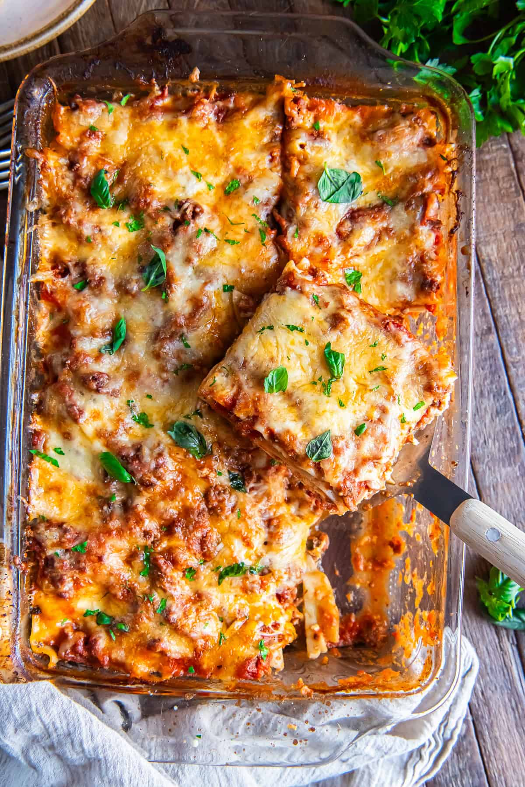

Homepage
Lasagna

Description
This refreshing Raw Carrot Salad tosses crisp-tender carrots and fresh herbs in a warm and tangy dressing. A simple and lovely side dish for spring or summer. Vegan & Gluten-Free.
Ingredients
- Meat
- Onion
- Garlic
- Tomato
- Sugar
- Spices
- Noodles
- Cheese
- Egg
Steps
- Cut the carrot in tiny slices
- Mix honey, soy sauce, rice vinegar, red pepper, ginger, smashed garlic, spring onion and sesame seeds
- Heat up the extra virgin olive oil and after heated, slowly pour it on the mixed ingredients and stir
- Put the finished sauce on the carrot, mix well and add some fresh spring onions and let it sit for five minutes